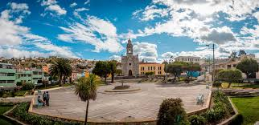
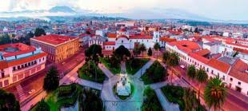
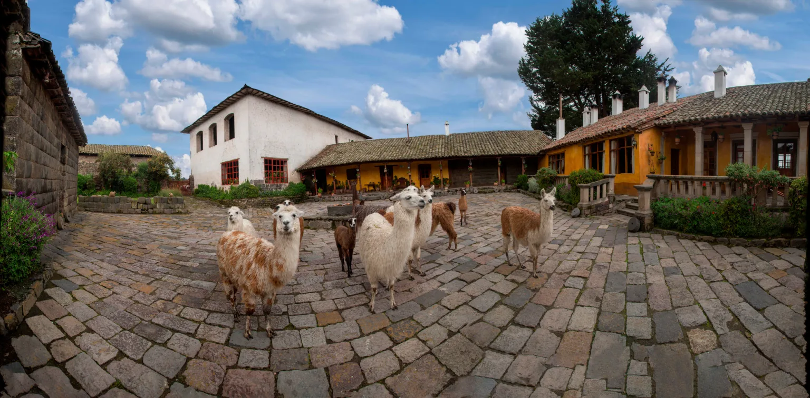
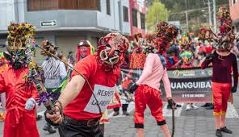
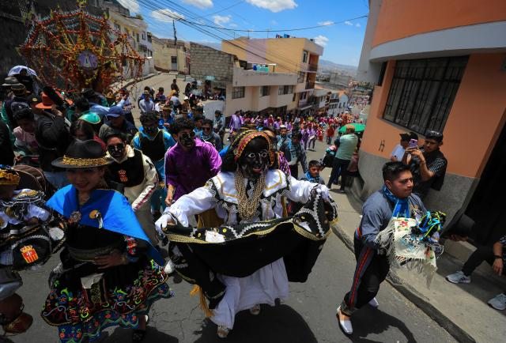
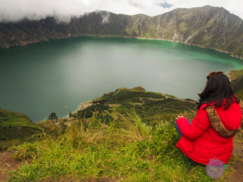

Galeria
|

Iglesia de Santo Domingo
Ubicada en pleno centro histórico de Latacunga, junto al Parque Vicente León. |

Centro históricoEl centro histórico de Latacunga es una joya patrimonial no solo para la ciudad sino |
|

San Agustin de CalloUbicada a unos 10-12 km de Latacunga, es uno de los lugares más fascinantes del Ecuador |

Carnaval en Latacungaaunque no es tan famoso como otras festividades de la ciudad como la Mama Negra, sí tiene un carácter muy especial y culturalmente rico, pues mezcla elementos andinos, mestizos y religiosos.El Carnaval en Latacunga se vive con alegría, música, danza, agua y mucha tradición. Se celebra los días previos al Miércoles de Ceniza, siguiendo el calendario litúrgico católico, pero con un fuerte presencia de costumbres ancestrales indígenas. |
|

Mama NegraLa Mama Negra es la fiesta más emblemática de Latacunga, celebrada en honor a la Virgen de las Mercedes, considerada protectora de la ciudad frente a erupciones volcánicas. Se realiza dos veces al año, en septiembre y noviembre, y mezcla tradiciones indígenas, españolas y africanas, reflejando la diversidad cultural del Ecuador. El personaje principal, la Mama Negra, es representado por un hombre vestido de mujer negra, quien recorre las calles montado a caballo, lanzando leche y dulces como símbolo de purificación. Le acompañan personajes coloridos como el Ángel de la Estrella, los Huacos, los Camisones y los Diablos de lata. |

Laguna de Quilotoa
La laguna de Quilotoa es uno de los destinos turísticos más impactantes de la sierra ecuatoriana. Se originó hace más de 800 años por la erupción
del volcán Quilotoa, formando una caldera de 250 metros de profundidad. Sus aguas de tono verde turquesa cambian según la luz solar,
gracias a los minerales presentes en su fondo. |